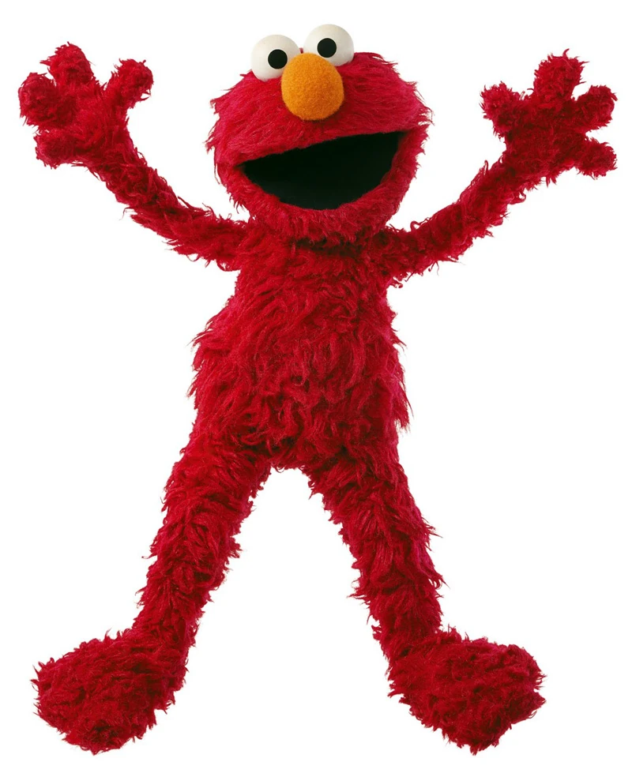

Elmo’s Resume
“La la la, la la la… Elmo’s world of work!”

Contact Information:
- Phone: (123) ELM-0FUN
- Email: tickleme@sesamestreet.com
- Address: 123 Sesame Street, New York, NY
Also check out Elmo's Linked In page!
Skills:
- Giggle Specialist – Certified in producing contagious laughter within seconds.
- Tickling Expert – Decades of hands-on experience in tickle-based stress relief.
- High-Pitched Communication – Can capture attention across all age groups (and dogs).
- Teamwork – Strong collaborations with Big Bird, Cookie Monster, and even Oscar (on good days).
- Musical Ability – Fluent in jingles, especially about himself.
- Conflict Resolution – Skilled at reminding grouches to “use their inside voices.”
Education:
- Sesame Street School of Lifelong Learning
Degree: Bachelor of Giggles, Minor in ABCs & 123s
- Honors: Gold Star Sticker Recipient (multiple years in a row!)
Experience:
Sesame Street Cast Member | PBS | 1980–Present
- Entertained millions of children and adults daily with charm, positivity, and songs about his world.
- Successfully explained complex topics like sharing, friendship, and why the sky is blue—in under 60 seconds.
- Acted as unofficial morale officer, ensuring everyone (including adults) remembers how to laugh.
Take a look at Sesame Street's website!
Freelance Tickling Consultant | Global | Ongoing
- Provided personalized tickle sessions upon request.
- Guaranteed improved moods, though results may vary depending on ticklishness.
Toy Industry Icon | Worldwide | 1996–2000
- Headlined the Tickle Me Elmo craze, becoming a household name.
- Led to record-breaking toy sales and multiple holiday shopping meltdowns.
References:
- Big Bird (can vouch for teamwork skills)
- Cookie Monster (can vouch for snack-sharing… sometimes)
- Oscar the Grouch (begrudgingly admits Elmo is “okay, I guess”)